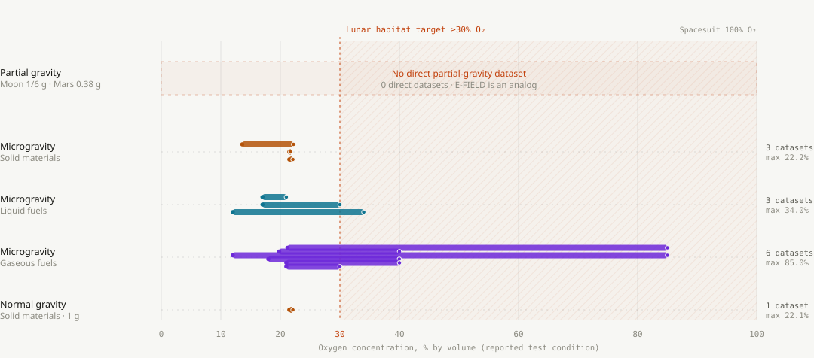
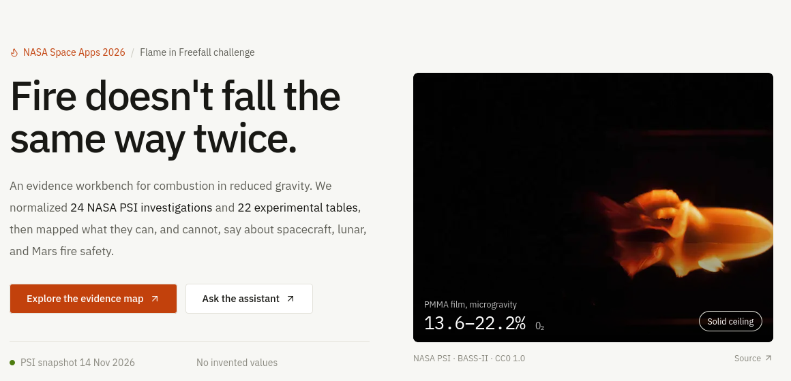

Flame in Freefall is an evidence workbench for NASA’s microgravity combustion research. We normalized 24 PSI investigations and 22 experimental tables, then mapped what they can — and cannot — say about spacecraft, lunar, and Mars fire safety.
More oxygen means easier ignition and faster flame spread. NASA has decades of microgravity combustion research — BASS, FLEX, ACME, SAFFIRE, SAME — and almost none of it was run at lunar oxygen levels.
24 Combustion Science investigations, 22 experimental summary tables, 2,870 normalized rows, 352 publications, 109 reports and science documents.
Only 12 of 22 tables report oxygen. Pressure is missing from most solid-material campaigns. Missing stays missing — never estimated.
Every tabulated combustion test in PSI ran in microgravity or at 1 g. Zero ran at lunar or Mars gravity.
“The intermediate oxygen concentration used on the Moon will likely be 30% or greater… Compared to Earth’s atmosphere, that’s more than a 40% increase in the oxygen concentration making materials much more flammable.”NASA Space Apps 2026 — Flame in Freefall challenge brief


Every summary table plotted by reported oxygen and gravity. The empty lane is the finding, so it is drawn, not hidden.
24 records filtered by gravity class, material phase and data availability, with the normalized conditions behind each number.
Answers from the tables and the report corpus, cites the record and page, and says “not reported” when the snapshot is silent.
Six normalization rules, four evidence classes, and the questions this snapshot cannot answer.
Reports and science documents downloaded from the public PSI repository, split into page-stamped passages, ranked with BM25.
A Groq-hosted model may only use the retrieved context. No context, no answer — the structured table answer is returned instead.
Any percentage that is not in the normalized tables or the cited passages is rejected and the deterministic answer is served instead.
Microgravity measurements from flight experiments. Real, but nearly all sit at Earth-like oxygen.
SAFFIRE-II reports one matched normal-gravity column. It bounds gravity sensitivity for one material set, nothing more.
E-FIELD mimics buoyancy-free behavior with electric fields. Useful, explicitly not a gravity measurement.
Lunar and Mars gravity. The gap is in the archive, not only in our interface.
What would change the answer: one solid-material test above 30% O₂, one partial-gravity solid burn, and a matched 1 g / µg matrix. All three are named on the site as missing observations, not as future features.
Everything is public: the live workbench, the ingestion script that rebuilds the dataset from the NASA PSI API, and the normalized JSON it produces. If the archive changes, re-run the script and the site rebuilds itself.
Open the evidence map, then ask the assistant about partial gravity.